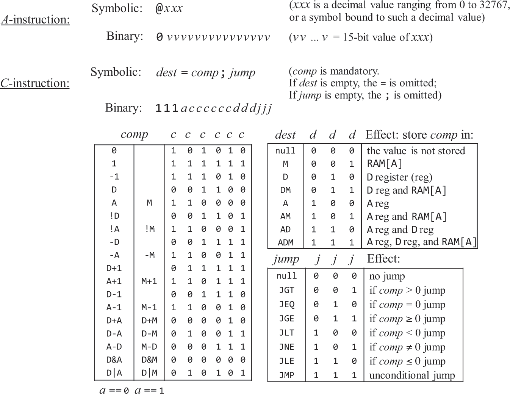
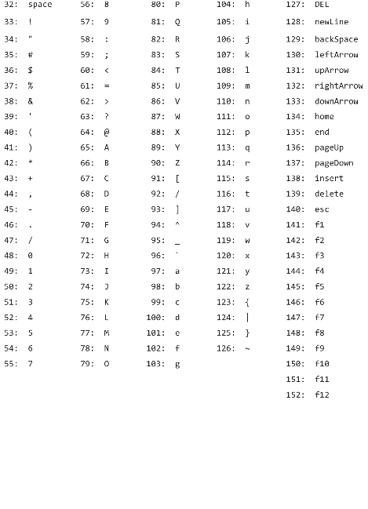
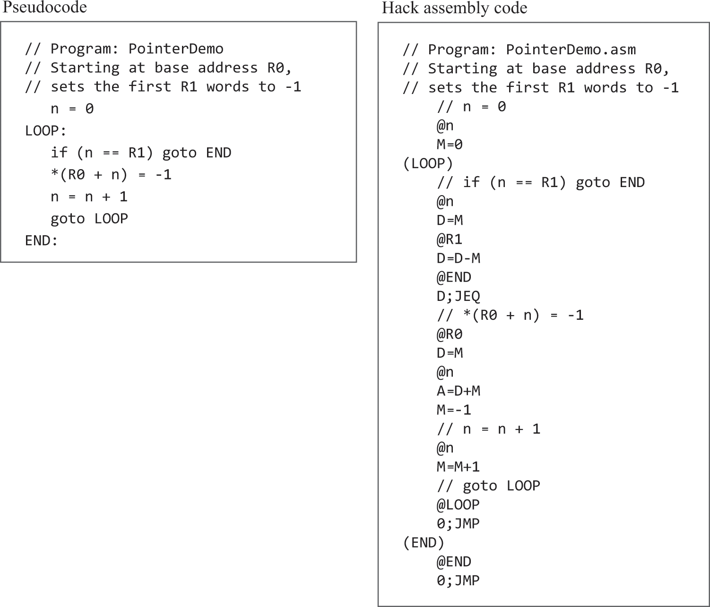

机器语言
概述
· 硬件设计 <-> 机器语言 -> 汇编语言，硬件设计旨在运行指定的机器语言，为了方便编写，我们制造汇编器以将汇编语言翻译为机器语言。所以这三者存在绑定 关系，汇编语言等同于机器语言，不能跨硬件架构。
· 汇编中声明标签之类的被称为伪指令，它没有对应的机器指令。机器指令第一行为0行，本例中，第n行会被加载到ROM[n]。goto到一个符号而不是goto到汇编地 址，被称为可重定位的。
语法设计图

语法解释
-
可读可写的RAM用于存放数据，只读的ROM用于存放指令。
-
A寄存器的值同时是RAM、ROM的地址。
-
M寄存器的值是RAM在地址A处的数据。
-
D寄存器单纯的用于存放数据。
-
使用常量的唯一方式是@17，这将会把17置入A，如果要使用它，还要通过D=A将其复制到D。例如要将RAM[100]置为17：@17, D=A, @100, M=D
-
要跳转到ROM[29]执行：@29, 0;JMP
-
当D==0时跳抓到ROM[29]：@29, D;JEQ
-
设置变量x=17：@17, D=A, @x, M=D。汇编器将为x分配一个内存地址并保管x和内存地址的映射关系。
-
汇编器还处理一些内置符号：
-
R0..R15，代表0..15，所以@R3等同于@3。
-
SCREEN代表16384，是将显存映射到内存的商定地址。那么要使屏幕的第row行第col列的像素变黑，就要计算RAM[SCREEN + row*32 + col/16]， 使其col%16位为1。
-
KBD代表24576，是将键盘映射到内存的商定地址。当按下键盘时，对应字母的码值会以16位二进制形式放置在RAM[KBD]上，没有按键时为0。其他高级操作 将由操作系统负责完成。
-
字符编码集

指针操作数组示例

习题
RAM[2] = RAM[0] * RAM[1]，不考虑操作数小于0的情况
需要修改测试脚本的repeat全部为210，否则时间不够
// if (RAM[0] > RAM[1]) {
// count = RAM[1];
// num = RAM[0];
// } else {
// count = RAM[0];
// num = RAM[1];
// }
// res = 0;
// count--;
// for (i = 0; i <= count; i++) {
// res += num;
// }
@R0
D=M
@R1
D=D-M
@R0_BIGGER
D;JGT
// r0 <= r1
@R0
D=M
@count
M=D
@R1
D=M
@num
M=D
(CORE)
// res = 0
@0
D=A
@res
M=D
// n--
@1
D=A
@count
M=M-D
// i = 0
@0
D=A
@i
M=D
(LOOP)
@i
D=M
@count
D=D-M
@STORE_RESULT
D;JGT
// res += num
@num
D=M
@res
M=D+M
// i++
@1
D=A
@i
M=D+M
@LOOP
0;JMP
// r0 > r1
(R0_BIGGER)
@R1
D=M
@count
M=D
@R0
D=M
@num
M=D
@CORE
0;JMP
(STORE_RESULT)
@res
D=M
@R2
M=D
(END)
@END
0;JMP
循环监听，按下键盘任意键则屏幕全黑，否则屏幕全白。
检测是否按键，按键则在整个屏幕变黑后才再次检测，变色过程很耗时，调到最快要花分钟。太慢了，这里只做524个像素变色。
// while (1) {
// color = RAM[KBD] > 0 ? -1 : 0;
// 屏幕256行，每行512像素，这里只弄前1024个像素，要不没完了，太慢太慢，但程序好像实际改变了65个寄存器，两行外加32位的颜色都被改了🤷♂️，懒得找原因了。
// // screen_max_address = SCREEN + 256*512/16;
// screen_max_address = SCREEN + 2*512/16;
// for (i = SCREEN; i < screen_max_address; i++) {
// RAM[i] = color;
// }
// }
// @8192
@64
D=A
@SCREEN
D=D+A
@screen_max_address
M=D
(LOOP_OUT)
// 默认填充白色，默认0以便黑色时直接-1
@0
D=A
@color
M=D
// 是否要填充黑色
@KBD
D=M
@BLACK_VALUE
D;JGT
(CORE)
@SCREEN
D=A
@i
M=D
(LOOP_IN)
@i
D=M
@screen_max_address
D=D-M
@LOOP_OUT
D;JGE
@color
D=M
@i
A=M
M=D
@i
M=M+1
@LOOP_IN
0;JMP
(BLACK_VALUE)
@color
M=M-1
@CORE
0;JMP